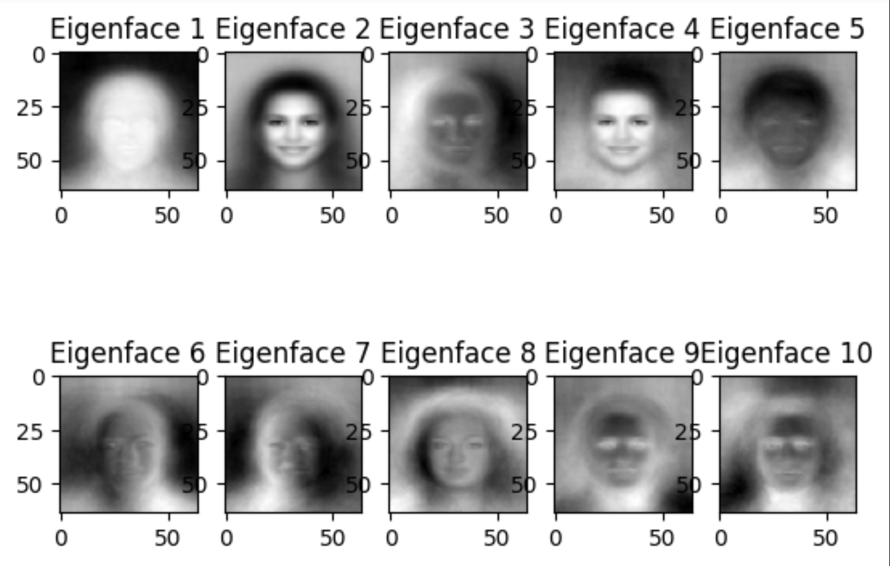
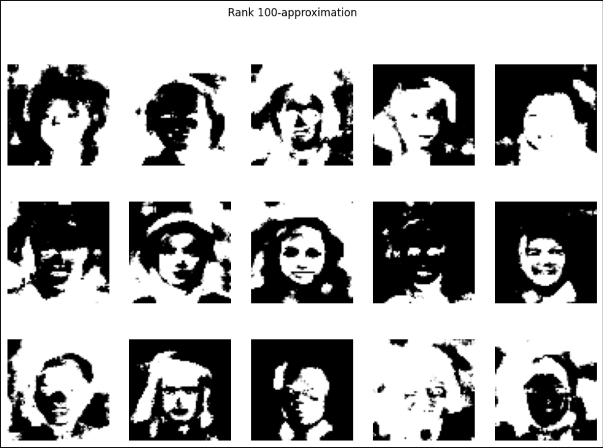
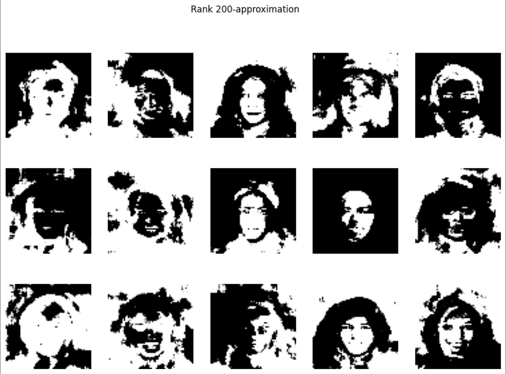
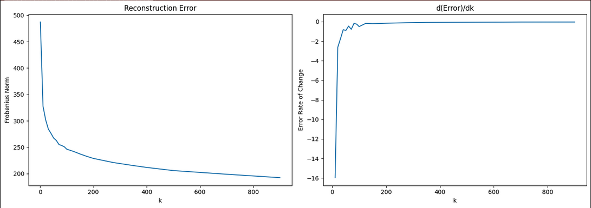
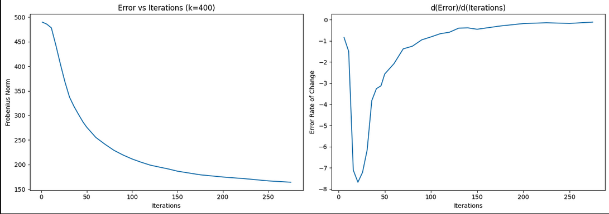
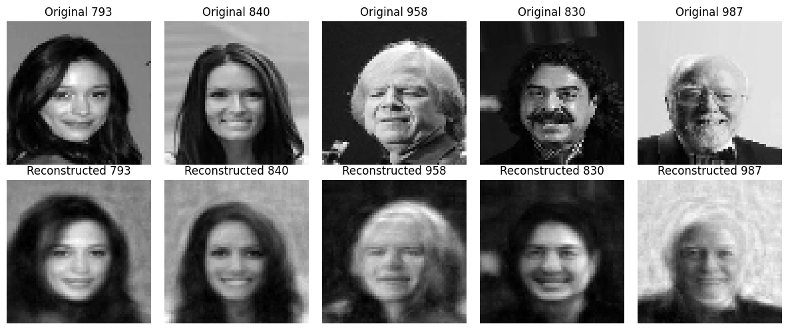
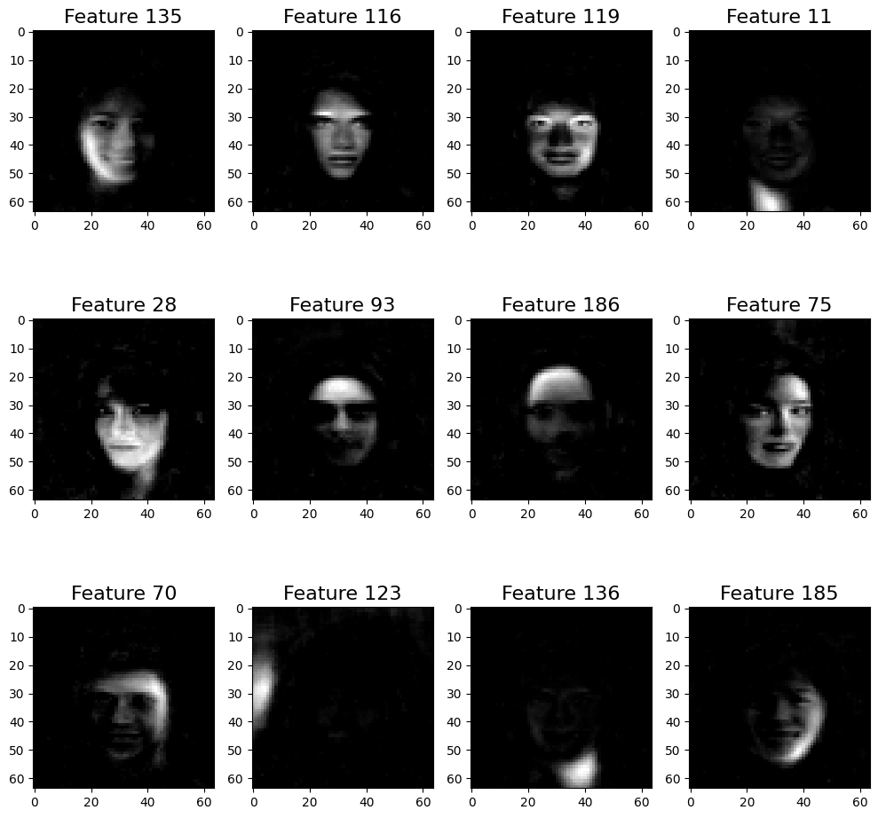
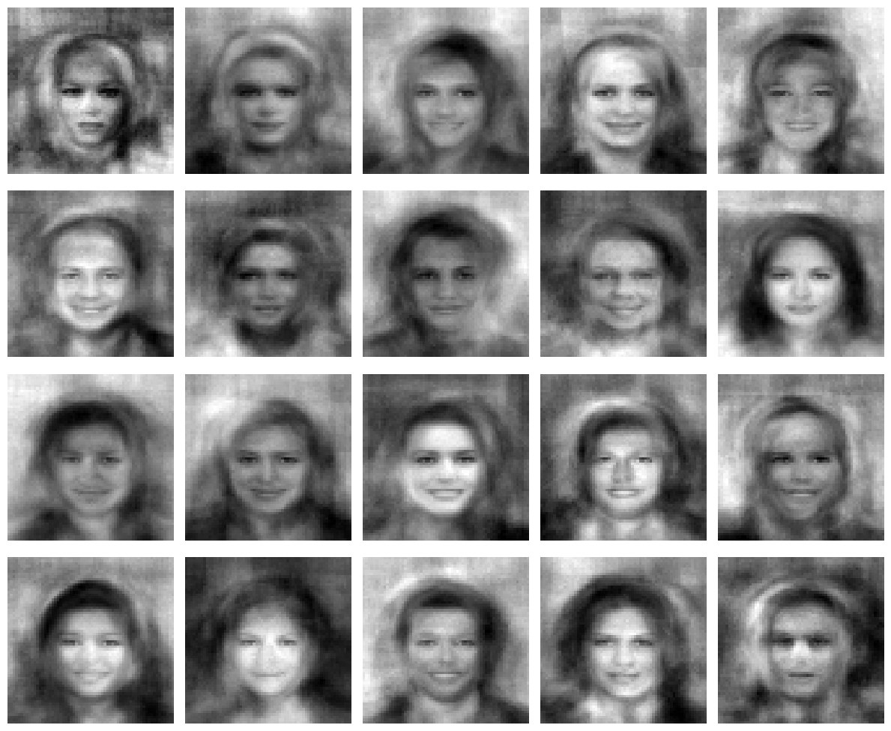

Introduction
Eigenfaces are a cool application of SVD, and in this article, we'll take a look into how we can generate some interesting pictures using a large dataset.
SVD
SVD, or Singular Value Decomposition, is a way of breaking any matrix down into three simpler pieces that reveal its underlying structure.
But what does this mean?
Let's say we have a matrix $M \in \mathbb{R}^{m \times n}$. We can represent this given matrix as $M = U \Sigma V^T$,
where the orthogonal matracies $U \in \mathbb{R}^{m\times m}$, and $V \in \mathbb{R}^{n \times n}$.
$\Sigma \in \mathbb{R}^{m \times n}$, such that $\Sigma$ is a diagonal matrix containing values of $\sigma_1 \geq \dotsb \geq \sigma_r > 0$.
Visually, $\Sigma$ looks something like this, where the empty spots will be just zeros:
$$
\Sigma =
\begin{pmatrix}
\sigma_1 & & & & & \\
& \sigma_2 & & & & \\
& & \ddots & & & \\
& & & \sigma_r & & \\
& & & & \ddots & \\
& & & & & 0
\end{pmatrix}_{m \times n}
$$
This still doesn't tell us much.
In an intuitive way, let's think about each component individually:
- $V^T$: Projects the data into a new coordinate system aligned with its most important directions
- $\Sigma$: Scales each direction by how much variance it captures
- $U$: Expresses each original data point as a combination of those directions
The fun thing is, it can be done for any real matrix $M$!
If we use the definition that we stated, we know that as we iterate through values of $\sigma_i$, they decrease. This means that the most important features will be on the upper values of $\sigma_i$.
Coding
Loading the Data
Okay, let's try and apply this.
The first thing we'll do is load the dataset, and turn it into something we can perform matrix operations on.
This is just some boilerplating, so feel free to copy it.
import kagglehub
import numpy as np
import os
import cv2
import matplotlib.pyplot as plt
path = kagglehub.dataset_download("jessicali9530/celeba-dataset")
def load_images(image_directory, count=1000, img_size=(64, 64)):
flattened_images = []
processed_count = 0
full_image_path = os.path.join(image_directory, 'img_align_celeba')
for root, _, files in os.walk(full_image_path):
for file in files:
if processed_count >= count:
break
if file.endswith(('.jpg', '.png', '.jpeg')):
filepath = os.path.join(root, file)
img = cv2.imread(filepath, cv2.IMREAD_GRAYSCALE)
if img is not None:
img_resized = cv2.resize(img, img_size, interpolation=cv2.INTER_CUBIC)
flattened_images.append(img_resized.flatten())
processed_count += 1
return np.array(flattened_images)
Here, this function returns a matrix where each row is a compressed grayscale image. $\newline$ Keeping it flat and grayscale allows us to conform the images into something we can process through SVD. $\newline$ We will keep the images as 64 by 64 images so we don't spend too much processing power trying to compute these images.
SVD
Thankfully, Numpy provides us with an SVD function to handle most of the heavy lifting. We subtract the mean face to remove any uniform information (say the background), and just keep track of values that vary from face to face.
images = load_images(path, count=1_000)
X = images - mean_faces
U, s, Vt = np.linalg.svd(X)
# U: (1000, 1000), s: (1000,), Vt: (4096, 4096)
Generating a Face
Something fun we can do is attempt to generate random faces through a linear model. We already have the values of $\Sigma$, we can just multiply a random matrix with it.
def generate_random_face(Vt, s, mean_face, r=100):
c = np.random.randn(r) * s[:r]
face = mean_face + c @ Vt[:r]
face = np.clip(face, 0, 255)
face.reshape(64, 64)
Here are just some collections I was able to generate:





Another way...?
SVD gives us globally blended features — each eigenface is a ghostly mix of the entire dataset. NNMF takes a different approach: it constrains both WW $W$ and $H$ to be non-negative, which forces the decomposition to find parts rather than blends. In practice, this means rows of $H$ end up looking like localized facial features — eyes, noses, hair — rather than full-face ghosts. $$\newline$$ This method generates photos that resemble faces, but I think we can do better. You can read more about Non-Negative Matrix Factorization here.def NNMF(V, k=100, MAX_ITERATION=500):
eps = 1e-9
tol = 1e-4
m, n = V.shape
W = np.random.rand(m, k)
H = np.random.rand(k, n)
previous_error = np.inf
for i in range(MAX_ITERATION):
H_num = W.T @ V
H_den = W.T @ W @ H + eps
H *= (H_num / H_den)
W_num = V @ H.T
W_den = W @ H @ H.T + eps
W *= (W_num / W_den)
current_error = np.linalg.norm(V - W @ H, 'fro')
diff = abs(previous_error - current_error)
if i > 0 and diff / previous_error < tol:
break
previous_error = np.linalg.norm(V - W @ H, 'fro')
return W, H
Errors
We will compute the errors too to pick a $k$ size and a $MAX\_ITERATION$ size.errors = {}
error_ranges = list(range(1, 100, 10)) \
+ list(range(100, 200, 25)) \
+ list(range(200, 400, 75)) \
+ list(range(400, 500, 100)) \
+ list(range(500, 1000, 200))
# same as
error_ranges = [1, 11, 21, 31, 41, 51, 61, 71,
81, 91, 100, 125, 150, 175, 200,
275, 350, 400, 500, 700, 900]
errors = {}
error_ranges = list(range(1, 100, 10)) \
+ list(range(100, 200, 25)) \
+ list(range(200, 400, 75)) \
+ list(range(400, 500, 100)) \
+ list(range(500, 1000, 200))
error_ranges = sorted(set(error_ranges))
for k in tqdm.tqdm(error_ranges):
W, H = NNMF(images, k, 100)
WH = W @ H
errors[k] = np.linalg.norm(images - WH, 'fro')
keys = list(errors.keys())
vals = list(errors.values())
d_errs = {
keys[i]: (errors[keys[i]] - errors[keys[i-1]]) / (keys[i] - keys[i-1])
for i in range(1, len(keys))
}
fig, (ax1, ax2) = plt.subplots(1, 2, figsize=(14, 5))
ax1.plot(keys, vals)
ax1.set_title("Reconstruction Error")
ax1.set_xlabel("k")
ax1.set_ylabel("Frobenius Norm")
ax2.plot(list(d_errs.keys()), list(d_errs.values()))
ax2.set_title("d(Error)/dk")
ax2.set_xlabel("k")
ax2.set_ylabel("Error Rate of Change")
plt.tight_layout()


As you can see, the error converges to zero with a $k\approx 200$ and $MAX\_ITERATION \approx 200$. We can now start reconstructing faces to see how accurate our model is.Reconstruction!
Run this code, we can see how our model is able to reconstruct faces.W, H = NNMF(images, 200, 200)
def reconstruct_face(idx):
# W[idx] is the coefficient vector for image idx, shape (k,)
# W[idx] @ H is a weighted sum of the k components
reconstructed = W[idx] @ H # shape (n,) = (4096,)
return reconstructed.reshape(64, 64)
# Plot original vs reconstructed
fig, axes = plt.subplots(2, 5, figsize=(12, 5))
counter = 0
amount = 5
pictures = random.choices(list(range(0, images.shape[0])), k = amount)
for i in pictures:
original = images[i].reshape(64, 64)
reconstructed = reconstruct_face(i)
# Normalize for display
reconstructed = np.clip(reconstructed, 0, 255)
axes[0, counter].imshow(original, cmap='gray')
axes[0, counter].set_title(f'Original {i}')
axes[0, counter].axis('off')
axes[1, counter].imshow(reconstructed, cmap='gray')
axes[1, counter].set_title(f'Reconstructed {i}')
axes[1, counter].axis('off')
counter += 1
plt.tight_layout()

We can even see how much space we have saved by using a compression model!per_image_original = images[0].nbytes
per_image_compressed_amortized = W[0].nbytes + H.nbytes / len(images)
print(f"Compression took {per_image_compressed_amortized / per_image_original:.4f}x less space")
Compression took 0.4977x less spaceSick! We can also see each feature individually:
feature_importance = W.sum(axis=0)
top_indices = np.argsort(feature_importance)[::-1][:rows * cols]
fig_row_count = 3
fig_col_count = 4
# Auto-scale figure height based on grid size
fig, axes = plt.subplots(fig_row_count, fig_col_count, figsize=(10, 10))
for i, ax in enumerate(axes.flat):
component = H[top_indices[i]]
component = np.clip((component - component.min()) / (component.max() - component.min() + 1e-9), 0, 1)
component = component.reshape(64, 64)
axes[i // fig_col_count, i % fig_col_count].imshow(component, cmap='gray')
axes[i // fig_col_count, i % fig_col_count].set_title(f"Feature {top_indices[i]}", fontsize=16)
# ax.axis('off')
plt.tight_layout()
plt.show()

Alright, final step, just for fun, we'll just generate some random faces.def generate_random_face(mean, std, H):
coeffs = np.clip(np.random.normal(mean, std), 0, None)
face = coeffs @ H
return np.clip(face, 0, 255).reshape(64, 64)
mean = W.mean(axis=0)
std = W.std(axis=0)
fig, axes = plt.subplots(4, 5, figsize=(12, 10))
for ax in axes.flat:
ax.imshow(generate_random_face(mean, std, H), cmap='gray')
ax.axis('off')
plt.tight_layout()
Compared to SVD, we can see a lot more visible facial features!